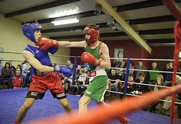
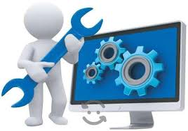
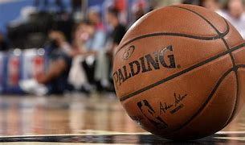
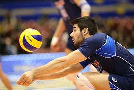

El trabajo por talleres es una estrategia pedagógica que además de abordar el contenido de una asignatura, enfoca sus acciones hacia el saber hacer, es decir, hacia la práctica de una actividad. En esencia el taller se organiza con un enfoque interdisciplinario y globalizador, donde el profesor ya no enseña en el sentido tradicional; sino que es un asistente técnico que ayuda a aprender.
Los alumnos aprenden haciendo y sus respuestas o soluciones podrían ser en algunos casos, más válidas que las del mismo profesor. Puede organizarse con el trabajo individualizado de alumnos, en parejas o en pequeños grupos, siempre y cuando el trabajo que se realice trascienda el simple conocimiento, convirtiéndose de esta manera en un aprendizaje integral que implique la práctica.
|  |
|  |  |  |
Estos talleres comenzaron a implementarse en los Telebachilleratos en el año 2016, ya que fue en este año cuando se realizaron las primeras jornadas academicas. Además, un aspecto importante para lograr impartir los difeentes talleres fue el crecimiento de la matricula en cada institución perteneciente al Telebachillerato Michoacán.